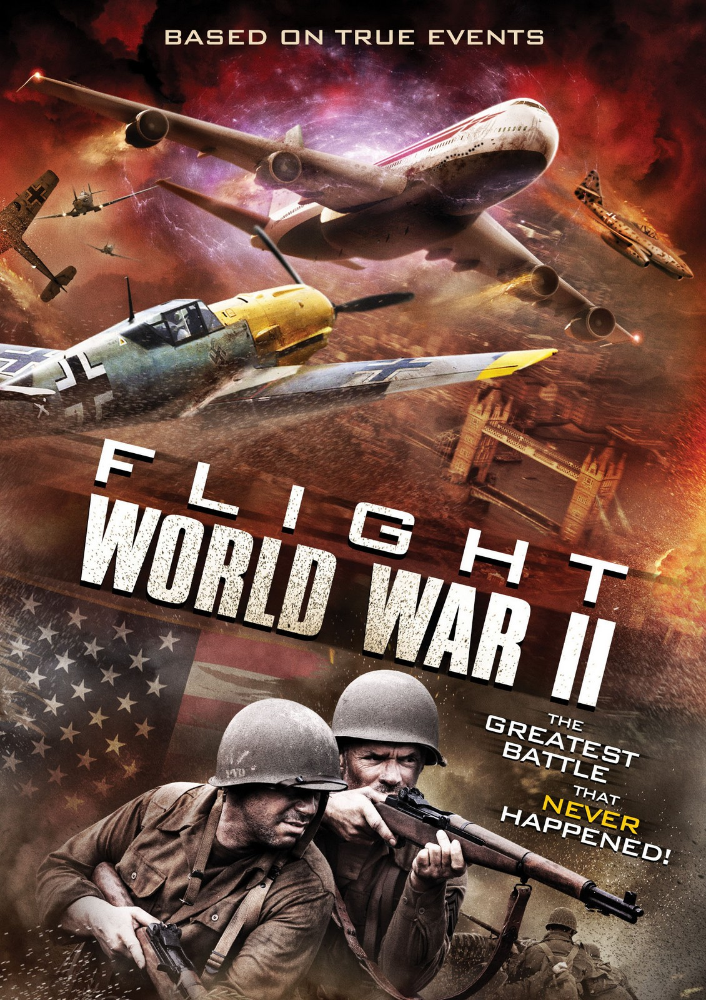

ARTICLE
World war II after
75 years
WW2 was a war fought amongst all the major powers of the time between the period of 1939 and 1945. There were two sides - the allies and the axis powers. The actions that led up to the event were as follows. The treaty of Versailles was signed by Germany on their surrender in ww1. When the Nazis came to power, they completely violated the treaty of Versailles. They did so by introducing conscription, creating an air force, and occupying the rhime lands. The allied power did not take any actions yet as they considered it irrelevant.
On August 23th, 1939 Nazi Germany and the soviet union signed the nonaggression pact. Next took place the joint Soviet-Nazi invasion of Poland. The poles fought hard but were no match for the crashing giants. Meanwhile, the allies (at the time consisting of France and the United Kingdom) made it clear that if Germany invaded Poland there would be actions. In reality, the UK and France hoped that they could end it diplomatically.
Neutral Norway was exporting iron to Germany. The allies tried to take control of Norway but as soon as Hitler heard this news, He demanded an invasion of Norway. The Germans had used many brutal tactics against the allies. But the Germans managed to capture Norway. After this embarrassing defeat, the British protested against the Prime Minister of the time Neville Chamberlain. So Neville Chamberlain resigned. Winston Churchill was assigned as the New Prime Minister.
France had mobilized troops along the Maginot Line. But did not defend the gardens as they thought it was naturally defended with hills and mountains. The Germans had outsmarted the French by pushing into the ardens with all their force. The French and British wanted to meet the Germans head-on. But the Germans encircled them. All the best of the French and British were trapped. British ships made the journey to rescue all the stranded soldiers. Then the road to Paris was open, France had fallen.
The Germans had occupied Northern France and established a puppet government in the south headed by Marshal Philippe Pétain. Most of the French Generals and leaders fled to the United Kingdom and set up a government in exile in London, the “Free French Forces”. The Free French Forces were headed by Charles de Gaulle. The Nazis made Vichy France sign a surrender treaty on 25 June 1940. At this point, it seemed like the Uk were alone. But they still had support from all their colonies.
After this, all of the French colonies in Africa devoted their loyalty to the Free Forces.
At this point, Italy also joined the axis powers. The axis had hoped the allies would not attack their colonies in Africa. The British did just that and attacked the Italian Colonies on 10 Jun 1940 the Germans Sent reinforcements to support Italy. This battle raged on for 3 years between the British top General Bernard Law Montgomery and General Erwin Rommel. The fight kept going back and forth. The axis powers had inflicted significant damage to the British but in the end, the British won the African Campaign.
On 22 June 1941 operation Barbarossa by the germans was a plan to invade the soviet union. The Germans hit the Soviets quickly, The Soviets defended fiercely there were close to 800000 casualties on both sides. 6 million Soviet troops were captured. The Germans came right up to Stalingrad. Which was the most deadly and fierce battle in history. 1.1 million troops died in the battle of Stalingrad. Then the Germans were at the doorstep of Moscow. If Moscow fell it was it, the Soviet Union would fall. But it got extremely cold, and the Germans were forced to call off the offensive till spring.
At this time Germany and Italy had staggering victories.
Japan, which had recently joined the axis, wanted resources to run its ever-growing population. So it wanted to invade Southeast Asia, but the problem was that southeast Asia was heavily colonized by the United States. It knew its military could not stand up to the American Navy. So Japan decided to bomb pearl harbor a major American navy base. So the USA was forced to declare war on Japan. Then Hitler made the wrong move by declaring war on the United States. The United States joined the allies' side. On July 10, 1943, allied forces launched an invasion of Italy. They reached the southern point of Italy. After that winter set in, there was a lot of mud in Italy which slowed the advance.
While in Southeast Asia Japan has swiftly taken over Southeast Asia. The Japanese were also threatening the borders of India and Australia. The Japanese were preparing to attack the American navy base of Midway. But the Americans were ready for and caused massive destruction to the Japanese Navy. The Americans sank 4 Japanese aircraft carriers. After this, the Japanese Navy would never recover.
American General Dwight D. Eisenhower was the overall commander of the Allied Landings in Europe. The allies made it look like they were going to attack southern France. But in reality, they were going to land in Normandy. The allies landed at Utah, Omaha, Gold, Juno, and Sword. A massive loss and struggle happened in Normandy. But in the end, Normandy was liberated. All of the German defenders retreated. The road to Paris was open and France was liberated. France was headed by Charles de Gaulle.
George S. Patton’s third army started to advance on the Industrial HeartLand of Germany. Meanwhile, the Soviets were making smashing progress on the axis powers. The Soviets had taken all of eastern Europe and were making a rapid advance to Berlin. Mussolini the dictator of Italy was voted out. While in Asia the Japanese were being pushed out of South East Asia. As the allies got closer to Japan the defense became fiercer. The battle of Okinawa had 110 k casualties.
Back in Europe, the allies came hard on the germans. The western allies from the west and the Soviets from the east. Hitler killed himself in his bunker as all hope was lost. Germany had unconditionally surrendered. The war in Europe was over.
The United States on July 16, 1945, successfully tested the first nuclear bomb in New Mexico. The United had two options Keep fighting till Tokyo, or they could drop nuclear bombs and force Japan to surrender. The united dropped 2 bombs on Hiroshima and Nagasaki. Japan surrendered, the USA occupied japan for 7 years.
Thank you
Naman Singh
7C, Roll No. 34